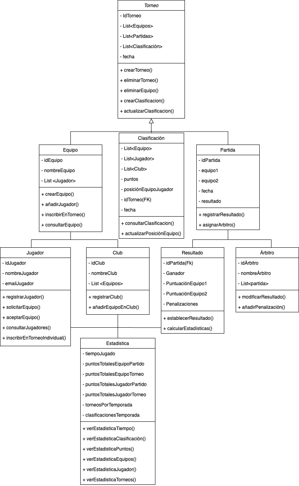

Torneo: En esta clase encontramos su PK que es su id (int), su nombre, tres "List"
(equipos, partidas y
clasificación) y una fecha (Date). Esta clase es la que podrá "crear los Torneos", principal actividad de la
plataforma, así como eliminar equipos por diferentes razones (incumplan normas, crados por error, etc.). También
será la clase encargada de crear las clasificaciones y de actualizarlas (archivar antiguas clasificaciones,
mostrar
las nuevas, etc).
Seguidamente hay tres clases. Equipo, Clasificación y Partida.
Equipo: Como atributos tiene un id (PK, int), un nombre de equipo, y List que
formarán cada equipo. Como métodos, se
podrá RegistrarEquipo (crear equipo en la plataforma), añadir jugadores al equipo , inscribir un equipo en un
torneo y consultar los equipos.
Clasificación: Sus atributos son tres List(Equipos, Jugadores y Clubs). Tambiémn
tendrá otros como puntos,
posicionEquipoJugador, la fecha (Date) y una Foreign Key (FK) del Torneo que enlaza la clasificación con el
Torneo correspondiente. Los métodos de esta clase son consultar(ver)la clasificación y actualizar la posición de los
equipos/jugadores en la clasificación.
Partida: Esta clase tiene su propia PK (Primary Key) que será su id (int). También
tendrá como atributos equipo1,
equipo2, fecha y resultado. Sus métodos son "Registrar Resultado", método automático tras el resultado de la
partida y "Asignar Árbitro".
Enlazadas con estas, he creado cuatro subclases, Jugador, Club, Resultado y Árbitro.
Jugador: Representa al jugador individual, con propio id que será su PK, y sus otros
atributos son su nombre y su
email. Los métodos que ofrece esta clase son; Registrar jugador, donde el jugador se puede registrar en la
plataforma (crear perfil de jugador en la plataforma), y los métodos de aceptar una invitación a un equipo o
enviar
solicitud para unirse a un equipo. También tiene los métodos de consultarJugador (donde se ven los detalles del
Jugador) y el método para que el jugador pueda inscribirse en Torneos o partidas individuales.
Club: Sus atributos son su id (int, PK), nombre y List. Los métodos de esta clase
son "Registrar Club" (creación del
club en la plataforma), y "Añadir equipo en Club".
Resultado: Compuesto por una FK del idPartida, un atributo "ganador", dos atributos
"puntuaciones" (equip1 y equip2)
y un atributo "penalizaciones". Los métodos de esta clase son "Establecer Resultado", el cual "confirma" el
resultado registrado, y calcularEstadísticas, tomando los resultados gestiona todos los datos obtenidos de
jugadores, equipos, resultados, etc. y devuelve objetos de "tiempo jugado", puntos, etc. para el abastecer el
cálculo estadístico.
Árbitro: Esta clase está formada por un id de árbitro con el que se identifica la
clase (PK), un nombre y una List
que registra partidas asignadas. Los métodos que genera la clase árbitro son "Modificar Resultado" y "Añadir
Penalización".
Finalmente, he creado una última clase llamada "Estadística".
Estadística: Está formada por objetos creados a través del método del cálculo
estadístico así como de otros
generados por resultados y otros métodos de clases. Todos los métodos que ofrece esta clase son para mostrar los
diferentes cálculos estadísticos e información de interés para los usuarios.
